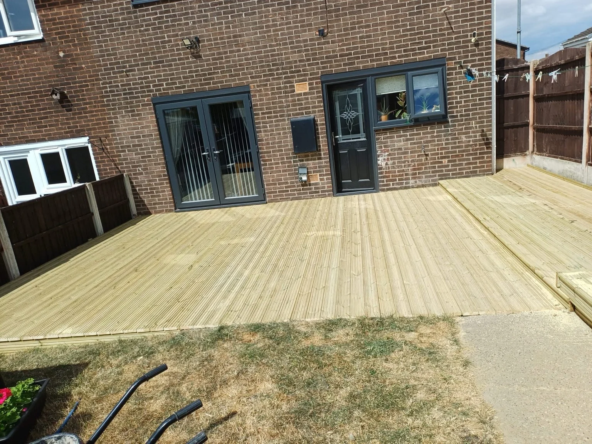
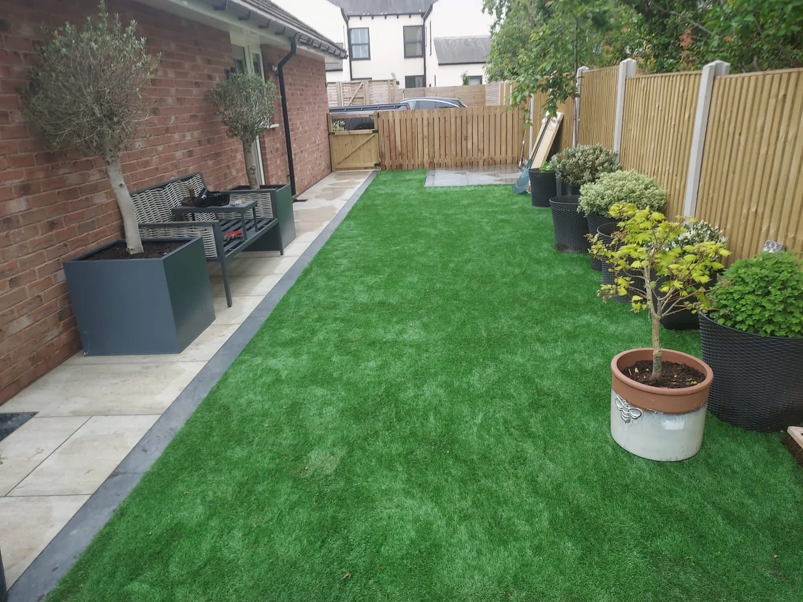
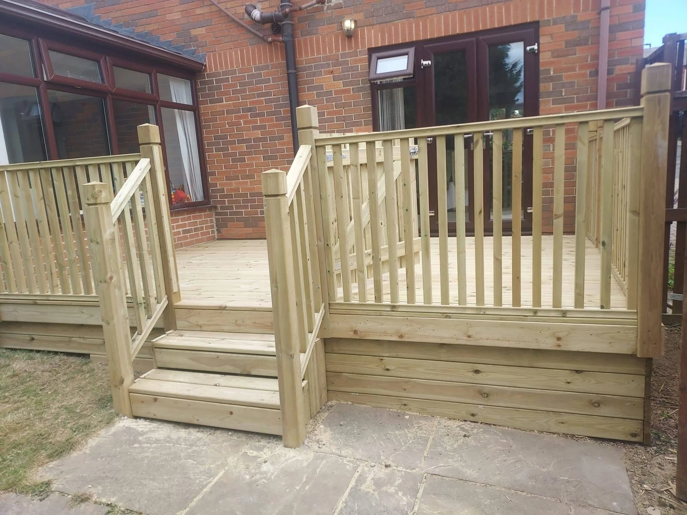
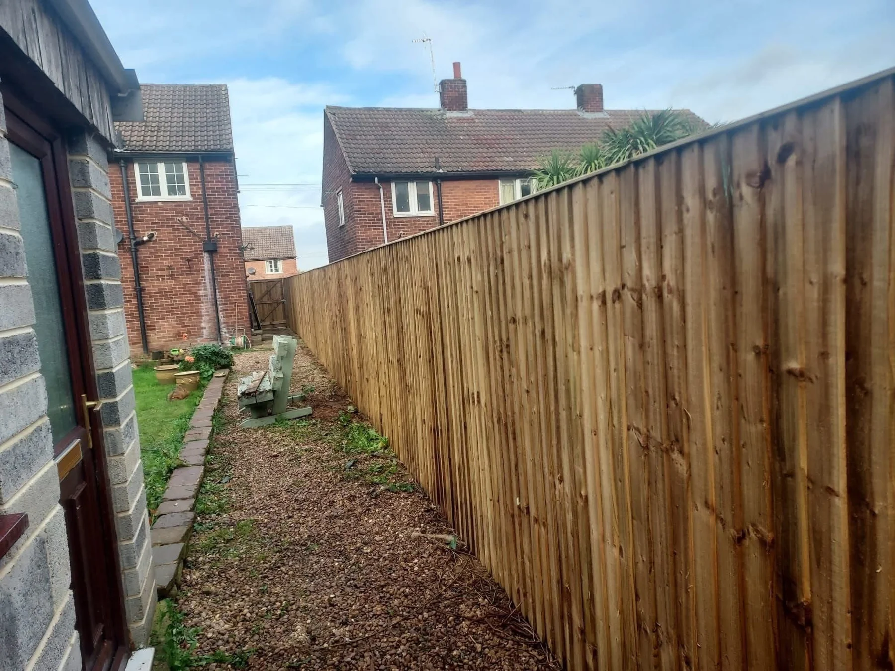

FencingTimber boundaries and garden screening

DeckingOutdoor platforms, steps and balustrades
GatesPractical access and a coordinated finish
Patios & LandscapingPaving, turfing and garden improvements
Garden BuildingsSheds and summerhouses for your space
FENCING, DECKING & MORE
Your garden.
Your way.
From a new boundary to a deck outside the back door, AD Fencing and Decking creates outdoor spaces with privacy, comfort and everyday use in mind.
Based in Wakefield, the family-run business provides fencing, decking, gates, patios, garden buildings and landscaping across the surrounding area.
Discuss your project →

FENCING & GATES
Privacy.
With purpose.
Timber fencing, contemporary screening and gates can define a garden and make access more practical. Explore the different finishes in the project photos, then talk through what suits your property.
Explore fencing →

RECENT WORK
Made for outdoors.
Fences, decks, gates and garden improvements by AD Fencing and Decking. Tap any photo to see the complete image.
PROJECT DETAILS
The complete picture.
A closer look at fences, decks and garden spaces, with different views of the finished details.
Talk through your ideas →
WAKEFIELD & SURROUNDING AREAS
Local work.
Lasting care.
AD Fencing and Decking is a family-run business with over ten years of industry experience. The focus is on outdoor spaces that fit the property and the way you want to use them.
01
More than fencing
Decking, patios, gates, sheds, summerhouses and landscaping.
02
Made around you
Discuss your layout, access, privacy and preferred finish.
03
Free quotes
Share the job details, your location and photos to get started.
FREE QUOTE
What’s the plan?
Tell us what you would like to change. The form opens WhatsApp with your details ready to send. You can add photos there.
Wakefield, Leeds, Castleford, Selby and surrounding areas. Ask about availability for your postcode.
Your details are only shared when you send the message. Privacy information.
GOOD TO KNOW
A few answers.
Where do you work?
AD Fencing and Decking is based in Wakefield and serves surrounding areas, including Leeds, Castleford and Selby. Send your postcode to check availability.
What can you help with?
Fencing, decking, gates, patios, landscaping, sheds and summerhouses. The service pages and gallery show examples of the work.
Can I discuss different fencing finishes?
Yes. Share the boundary dimensions, your priorities and any photos of the style you have in mind. The gallery includes timber and contemporary grey finishes.
Can you add steps or a balustrade to decking?
The portfolio includes decking with steps and balustrades. Explain the height, access and layout you need when requesting a quote.
How do I request a quote?
Call, email or complete the WhatsApp form with the service, location and project details. Photos and approximate measurements can help explain the job.
What should I include in my enquiry?
Include your postcode, approximate measurements, access details and a description of the work. Add a few photos when you send your WhatsApp message.
AD FENCING AND DECKING
Make it yours.
Wakefield & surrounding areas · Free quotes